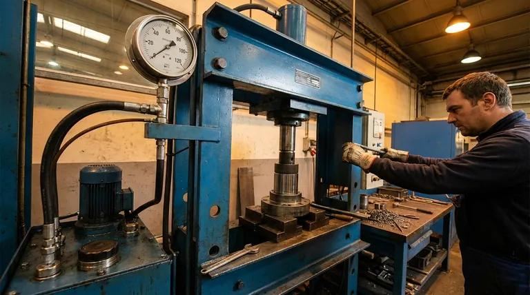
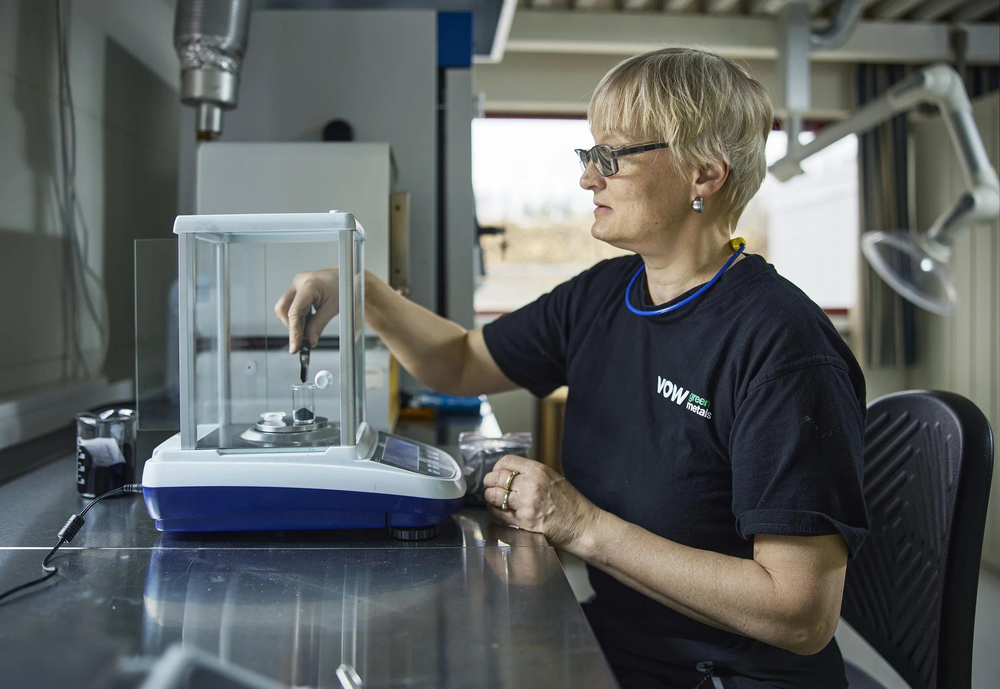

Semester objective A-O3: Use units, algebra, geometry, graphs, and experimental data to solve engineering problems.
Unit essential question: How do engineers use mathematics and evidence to predict the behavior of mechanical systems?
Learning target: Rearrange formulas and solve for unknown quantities.
Objectives: Identify variables, coefficients, and units; apply inverse operations to one-step and multi-step equations; isolate unknown quantities in motion, geometry, force, pressure, density, and power models; substitute values; check units and original equations; and interpret results against model assumptions and engineering requirements.
Worked Example: Spring Stiffness and Hooke's Law
Some engineering models describe how a spring responds to force. The ideal linear-spring relationship is F = kx, often called Hooke's law in its simplest form. Here F is applied force in newtons (N), k is spring stiffness in newtons per meter of extension (N/m), and x is the extension in meters (m). To solve for x, start with F = kx. Divide both sides by nonzero k: F/k = x, so x = F/k. If F = 60 N and k = 300 N/m, x = 60/300 = 0.20 m. Check by substituting: 300 N/m × 0.20 m = 60 N. A larger k means less extension under the same force. This linear model applies only within the spring's appropriate operating range.
Try it: solve for spring extension
A spring has stiffness k = 400 N/m and carries a 100 N force. Rearrange F = kx to find x before opening the solution.
Solution: x = F/k = 100/400 = 0.25 m. Check: 400 × 0.25 = 100 N.
Why Engineers Rearrange Formulas
Engineers use mathematical models to predict physical behavior. For constant speed, d = vt, where d is distance (m), v is speed (m/s), and t is elapsed time (s). Knowing two values allows you to find the third. The same relationship can be written as d = vt, v = d/t, or t = d/v. These are equivalent forms of one model, not unrelated formulas. The model assumes speed stays constant over the interval.
Why an engineering equation is more than a shortcut
Imagine a technician testing a conveyor belt. The technician records that a package moves 15 meters in 5 seconds while the belt runs at a steady rate. Dividing distance by time gives 3 meters per second. This is more than a calculation: it is a prediction rule. If the belt keeps moving at 3 m/s for another 8 seconds, the model predicts that a package will travel 24 meters. The engineer can use that prediction to decide whether the conveyor is long enough or whether a package will reach a sensor at the correct time.
A mathematical model has three important parts. First, it identifies the physical quantities being related. Second, it states how those quantities are connected mathematically. Third, it has conditions or assumptions that determine when the relationship is useful. In the conveyor example, distance equals speed multiplied by time only when the speed used is constant or represents the average over the full interval. A belt that stops halfway through the test requires more careful analysis.
How to read a formula in words
Before doing algebra, translate the equation into a sentence. The formula d = vt says, “distance traveled equals speed multiplied by elapsed time.” The area formula A = Lw says, “the area of a rectangle equals its length multiplied by its width.” These statements explain what the operations mean. Multiplying speed by time accumulates distance; multiplying two perpendicular dimensions produces area. Translating symbols into words prevents a common mistake: choosing an equation because it contains the right letters without considering whether it describes the physical situation.
In this lesson, you will learn to identify what an equation means, isolate an unknown, substitute measurements, and decide whether the result makes sense. Later mechanical engineering topics use the same algebraic skills with more complicated physical relationships.
Variables and Units
A variable represents a quantity that can change or is unknown. A constant is held fixed in a particular calculation. In A = Lw, area A is in m², length L is in m, and width w is in m. For L = 0.30 m and w = 0.20 m, area is 0.060 m². Write units beside every given measurement: they help reveal errors.
To solve an engineering problem, identify the unknown, the known quantities, the governing relationship, and the conditions under which that relationship applies.
Symbols must be defined in context
Letters are not universal labels. The letter m might represent mass in a force equation, but the same letter written after a number is the unit symbol for meters. In F = ma, F is net force in newtons (N), m is mass in kilograms (kg), and a is acceleration in meters per second squared (m/s²). In P = F/A, P can represent pressure in pascals (Pa), F is the force acting perpendicular to a surface in newtons, and A is the area in square meters. In a different equation, P might mean power. Engineers avoid confusion by defining every symbol before using it.
Units are part of the measurement, not decoration. Writing “12” without a unit leaves the reader unable to tell whether the value means 12 seconds, 12 meters, or 12 newtons. A useful knowns-and-unknowns table has columns for symbol, meaning, value, and unit. For a constant-speed cart, the entries could be d = 24 m, t = 12 s, and v = unknown m/s. The table helps you see which formula contains the required variables.
Coefficients and numerical factors
A coefficient is a numerical multiplier attached to a variable. In F = 4x, the coefficient of x is 4. In the triangular-area equation A = ½bh, the fraction ½ is a fixed multiplier. To isolate an unknown, you must undo all operations affecting it, including coefficients. If 5x = 45, divide both sides by 5 to find x = 9. If ½x = 6, multiply both sides by 2 to find x = 12. The same reasoning applies when a coefficient is part of an engineering formula.
This unit relationship shows why newtons measure force. It also previews a later application: when net force and mass are known, acceleration can be found by rearranging F = ma to a = F/m. The equation is valid for net force and acceleration in a consistent inertial frame.
The Balance Principle
To rearrange a formula, isolate the desired variable while keeping the equation balanced. Perform the same operation on both sides. Inverse operations undo one another: division undoes multiplication, and subtraction undoes addition. From 4x = 28, dividing both sides by 4 gives x = 7.
For d = vt, divide both sides by t: d/t = vt/t, so v = d/t. This is valid for t ≠ 0. You have preserved equality, rather than simply moving letters.
Four inverse-operation patterns
Start with addition: if x + 7 = 19, subtract 7 from both sides, so x = 12. For subtraction: if x − 7 = 19, add 7 to both sides, so x = 26. For multiplication: if 6x = 42, divide both sides by 6, so x = 7. For division: if x/4 = 9, multiply both sides by 4, so x = 36. These four patterns appear repeatedly in engineering equations. The goal is always to leave the unknown alone on one side while maintaining equality.
Rearranging an equation is not “moving a number”
You may hear someone say, “Move the 5 to the other side and change the sign.” That shortcut can conceal the reason the operation works. A more reliable explanation is that you add, subtract, multiply, or divide both sides by the same quantity. For example, x − 5 = 11 becomes x − 5 + 5 = 11 + 5, giving x = 16. Writing the intermediate step helps when equations become more complicated.
Suppose a spring-test fixture has a measured total length described by L = x + 15 mm, where x is the adjustable portion. If L = 92 mm, subtract 15 mm from both sides: x = 92 mm − 15 mm = 77 mm. Check: 77 mm + 15 mm = 92 mm. Notice that you can subtract two lengths, but you cannot subtract 15 seconds from 92 millimeters. The units must describe compatible quantities.
When division is not allowed
Dividing by zero is undefined. In d = vt, solving for v requires t ≠ 0. In the area formula A = Lw, solving for width requires L ≠ 0. This is not a minor calculator rule: if the denominator is zero, the given information may not determine a unique solution. Always examine the values before dividing.
Three Steps: Solve for Speed
A cart travels 24 m in 12 s at constant speed. Use the three steps together.
Step 1 — Identify
Unknown: speed v. Known: distance d = 24 m and time t = 12 s. Original formula: d = vt.
Step 2 — Isolate
Step 3 — Substitute, calculate, and check
Check: (2 m/s)(12 s) = 24 m. The units and original equation agree.
Another example: the same procedure with unfamiliar numbers
A mobile inspection robot travels 17.5 m in 7.0 s at a steady speed. Step 1 — Identify: We know d = 17.5 m and t = 7.0 s; we need v. Step 2 — Isolate: Begin with d = vt and divide both sides by t to get v = d/t. Step 3 — Substitute and verify: v = 17.5/7.0 = 2.5 m/s. Check that 2.5 m/s × 7.0 s = 17.5 m. This example includes decimals but uses exactly the same reasoning as the earlier cart problem.
Why the order matters
Students sometimes put numbers into an equation before deciding which variable to isolate. That can work in simple cases, but it becomes difficult to track operations when formulas contain several symbols or fractions. Rearranging first produces a reusable expression, such as v = d/t, that can be checked for dimensional consistency before arithmetic begins. The order also makes it easier for another engineer to review the calculation and locate an error.
Guided practice: A platform travels 54 m in 18 s at constant speed. Identify the unknown, write the rearranged formula, and calculate. The result should be 3 m/s, because 54/18 = 3. Verify with 3 × 18 = 54. If you obtained 972, you probably multiplied distance by time instead of dividing; the resulting unit m·s would also reveal the mistake.
Solve for Distance or Time
To find distance, keep d = vt. If speed is 3 m/s and time is 8 s, distance = 3 × 8 = 24 m. To find time, divide d = vt by v to obtain t = d/v. For 30 m at 5 m/s, time = 30/5 = 6 s.
Each result can be checked in the original equation. For the time example, 5 m/s × 6 s = 30 m. Note that dividing by v requires nonzero speed.
Choosing which form of the same equation to use
Consider a warehouse robot that moves at a constant speed of 1.5 m/s. The robot must travel 27 m to a charging station. The unknown is time, not speed or distance. Step 1: Identify t as unknown, with d = 27 m and v = 1.5 m/s. Step 2: Rearrange d = vt by dividing both sides by v: t = d/v. Step 3: Substitute: t = 27 m / 1.5 m/s = 18 s. Check: 1.5 m/s × 18 s = 27 m.
Now suppose the same robot travels for 40 s at 1.5 m/s. The unknown is distance. No rearrangement is necessary because d is already isolated: d = vt = 1.5 × 40 = 60 m. Do not perform algebra simply for its own sake. Identify what the problem asks, then choose the form that isolates that quantity.
Units as an independent check
For distance, (m/s) × s = m because seconds cancel. For time, m ÷ (m/s) = s because meters cancel. For speed, m ÷ s = m/s. If a proposed speed calculation produces m·s, the formula was probably rearranged incorrectly. This is the same dimensional-analysis principle introduced in A3.2, now applied to algebra.
Try the reverse check: A machine advances a part 8.4 m in 3.5 s. The speed is 8.4/3.5 = 2.4 m/s. At that speed, the predicted distance in 3.5 s is 2.4 × 3.5 = 8.4 m. The original and rearranged equations agree.
Rectangle Area Formulas
For a rectangular plate, A = Lw. If the area and width are known, divide both sides by w to obtain L = A/w. If area and length are known, divide by L to obtain w = A/L. Neither denominator may be zero.
Example: A = 0.24 m² and w = 0.40 m. Step 1: Find L. Step 2: Rearrange to L = A/w. Step 3: L = 0.24/0.40 = 0.60 m. Verify: 0.60 × 0.40 = 0.24 m².
Solving for either dimension
A machine guard must cover a rectangular opening. Its required area is 0.72 m², and its available height is 0.90 m. What width is needed? Step 1: Define A = 0.72 m², L = 0.90 m, and w = unknown. Step 2: Rearrange A = Lw to w = A/L. Step 3: w = 0.72 m² / 0.90 m = 0.80 m. Check: 0.90 m × 0.80 m = 0.72 m².
Suppose instead that the available width is 0.60 m. The required length is L = A/w = 0.72/0.60 = 1.20 m. The same area can be achieved by different combinations of dimensions. An engineering requirement may also impose a maximum width or height, so algebra gives a candidate dimension but does not automatically guarantee that the design is feasible.
Square units cannot be ignored
Because area is length multiplied by length, its SI unit is m². Dividing an area by a length gives a length: m²/m = m. If you accidentally use a width of 40 cm with an area expressed in m², first convert 40 cm to 0.40 m. Mixing units without conversion leads to incorrect dimensions even when the algebra is right.
Guided practice: A panel has area 1.50 m² and width 0.75 m. Its required length is 1.50/0.75 = 2.0 m. Verify that 2.0 m × 0.75 m = 1.50 m². Notice how writing the original equation makes the check straightforward.
Triangle Area Formulas
A triangle has area A = ½bh, where b is base and h is perpendicular height. If height is unknown, first multiply both sides by 2, then divide by b: 2A = bh → h = 2A/b.
Step 1: Given A = 0.30 m² and b = 1.2 m, find h. Step 2: Rearrange to h = 2A/b. Step 3: h = 2(0.30)/1.2 = 0.50 m. Check: ½ × 1.2 × 0.50 = 0.30 m². The formula describes a triangle with perpendicular height.
Why the fraction matters
A triangle occupies half the area of a rectangle with the same base and perpendicular height. That is why A = ½bh includes the factor ½. To solve for height, you must undo both multiplication by ½ and multiplication by b. The steps are A = ½bh, then 2A = bh, then h = 2A/b. The order is clear because each line remains equivalent to the previous one.
Suppose a triangular gusset plate has area 0.18 m² and a base of 0.90 m. Step 1: Identify h as the unknown. Step 2: Isolate h = 2A/b. Step 3: h = (2 × 0.18)/0.90 = 0.40 m. Check: ½ × 0.90 × 0.40 = 0.18 m².
Solving for the base instead
If height is known and base is unknown, multiply both sides of A = ½bh by 2, then divide by h. The result is b = 2A/h. For area 0.18 m² and height 0.30 m, b = 0.36/0.30 = 1.20 m. Check: ½ × 1.20 × 0.30 = 0.18 m². The method is identical; only the target variable changes.
Important geometry condition: Height means the perpendicular distance from the base to the opposite vertex, not necessarily the length of a slanted side. Using a slanted edge as height can produce a plausible-looking but incorrect answer. Understanding the physical geometry is part of choosing the correct mathematical model.
Changes in Length
For a component that changes length, ΔL = Lfinal − Linitial. Here ΔL is the difference between final and initial lengths. To isolate final length, add initial length to both sides: Lfinal = ΔL + Linitial. If a rod starts at 200 mm and lengthens by 0.5 mm, its final length is 200.5 mm.
To isolate initial length, rearrange to Linitial = Lfinal − ΔL. All quantities are lengths, so convert them to compatible units before addition or subtraction.
Signed changes have meaning
A change can be positive, zero, or negative. If a metal rod increases from 200.0 mm to 200.5 mm, ΔL = 200.5 − 200.0 = +0.5 mm. If it decreases from 200.0 mm to 199.7 mm, ΔL = 199.7 − 200.0 = −0.3 mm. A negative change does not necessarily mean the calculation is wrong; it can indicate contraction. The sign communicates the direction of change.
For a component that shortens by 0.3 mm, suppose its final length is 199.7 mm. To recover the initial length, use Linitial = Lfinal − ΔL = 199.7 − (−0.3) = 200.0 mm. Subtracting a negative number adds its magnitude. Parentheses make the signs clear.
Equations with two operations
Consider a sensor model y = 3x + 4, where y is the recorded output and x is an input quantity measured on a compatible scale. To isolate x, first subtract 4 from both sides: y − 4 = 3x. Then divide both sides by 3: x = (y − 4)/3. If y = 25, x = (25 − 4)/3 = 7. Check: 3(7) + 4 = 25. The key is to undo addition before undoing multiplication.
This pattern also appears in physical models such as temperature calibration or sensor offsets. When using an equation with units, ensure that quantities being added or subtracted are compatible and that coefficients carry any units required for dimensional consistency.
Interactive Formula Lab
Explore the same formulas with different known values. For rectangles and triangles, change the physical dimensions and observe the calculated area. For constant-speed motion, choose which quantity to solve for. The diagram and worked calculation update as you change measurements.
Formula Rearrangement Explorer
The diagram updates when you change the model or measurements.
Use the lab as a reasoning tool
Begin with the cart example and select speed as the unknown. Before looking at the output, write d = vt on paper and decide what operation removes t from the right side. Then compare your rearrangement with the lab's result. Change distance from 24 m to 48 m while keeping time at 12 s. Predict what happens to speed: it doubles from 2 m/s to 4 m/s because the distance doubles while time stays fixed. This is a proportional relationship.
Next, choose the rectangular-area model. Set length to 0.60 m and width to 0.40 m, then increase width to 0.80 m while keeping length fixed. Predict the area before checking: it doubles from 0.24 m² to 0.48 m². Change length as well to see how both dimensions determine area. This connects algebra to physical design decisions.
Finally, choose the triangle model. Set base to 1.2 m and height to 0.5 m, then double the base to 2.4 m while keeping height fixed. Predict the area: it doubles from 0.30 m² to 0.60 m². Next, compare the triangle with a rectangle having the same base and height: the triangle has half its area. If you cannot explain the direction of change, revisit the formula and identify which quantities are held constant.
Verify Every Answer
After solving, check units, substitution, and reasonableness. A length divided by time should have speed units. Substituting your calculated value into the original equation should reproduce the known measurement. An answer should also be plausible for the physical situation.
Common mistakes include multiplying instead of dividing when isolating a variable, ignoring parentheses, mixing units, and substituting before understanding the relationship. A dimensionally consistent equation can still be physically wrong if its assumptions do not fit the situation. The constant-speed formula, for example, does not directly model changing speed.
Worked error analysis: find the mistake
A student writes d = vt, then claims v = dt. For d = 20 m and t = 5 s, the student calculates v = 100 m·s. The arithmetic is correct for the expression dt, but the algebra is wrong. To isolate v, divide by t rather than multiply by t. The correct answer is v = 20/5 = 4 m/s. The incorrect unit m·s is another clue that the formula was rearranged incorrectly.
A second student calculates the height of a triangle using h = A/(2b). For A = 0.30 m² and b = 1.2 m, the student obtains 0.125 m. Substituting that into the original equation gives ½ × 1.2 × 0.125 = 0.075 m², not 0.30 m². The student divided by 2 when they should have multiplied by 2. The correct formula is h = 2A/b, giving 0.50 m.
From calculation to engineering judgment
Suppose a robot must cover at least 30 m in 10 s at constant speed. The minimum speed is v = d/t = 30/10 = 3 m/s. If a proposed robot travels at only 2.4 m/s, it would cover 24 m in 10 s and fail the requirement by 6 m. This is an engineering decision based on an algebraic calculation. Always connect the number to the requirement or physical meaning.
For a final self-check, ask: Did I define every variable? Did I isolate the correct unknown? Did I apply operations to both sides? Did I convert units? Does substituting my answer reproduce the original equation? Is the model appropriate? These questions turn algebra from a memorized procedure into a reliable engineering skill.

Engineering Applications: Force, Pressure, and Density
Algebraic rearrangement is used across mechanical engineering, not just in motion and geometry. The following examples introduce three additional models. Their detailed physical interpretation will be developed in later lessons; here the purpose is to practice identifying variables, rearranging equations, and checking units.
Application A — Net force, mass, and acceleration
Newton's second law is F = ma, where F is net force in newtons, m is mass in kilograms, and a is acceleration in m/s². If a test cart has mass 12 kg and experiences a net force of 36 N, solve for acceleration. Step 1: Unknown a; known F = 36 N and m = 12 kg. Step 2: Divide both sides of F = ma by m to get a = F/m. Step 3: a = 36/12 = 3 m/s². Check: 12 kg × 3 m/s² = 36 N. The force here is the net force, not necessarily a single applied force.
Application B — Pressure on a surface
For a uniformly distributed perpendicular force, average pressure is P = F/A, where P is pressure in pascals (Pa), F is force in newtons, and A is contact area in m². If pressure is 5,000 Pa over an area of 0.020 m², find force. Step 1: Unknown F. Step 2: Multiply both sides by A: F = PA. Step 3: F = 5,000 × 0.020 = 100 N. Check: 100 N / 0.020 m² = 5,000 Pa. This model uses average pressure and assumes the force acts perpendicular to the area.
Application C — Mass, volume, and density
Density is ρ = m/V, where ρ (the Greek letter rho) is density in kg/m³, m is mass in kg, and V is volume in m³. If a sample has density 2,700 kg/m³ and volume 0.002 m³, find its mass. Step 1: Unknown m. Step 2: Multiply both sides by V: m = ρV. Step 3: m = 2,700 × 0.002 = 5.4 kg. Check: 5.4/0.002 = 2,700 kg/m³. The result is meaningful only when the density describes the material or sample being considered.
Application D — Power, work, and time
Average power is P = W/t, where P is power in watts (W), W is work or energy transferred in joules (J), and t is elapsed time in seconds. Although the letter W is also the unit symbol for watts, in this formula it represents work. If a motor transfers 1,200 J in 6 s, its average power is 1,200/6 = 200 W. If power and time are known, rearrange to W = Pt. For 200 W over 9 s, work is 1,800 J. Check that 1,800 J / 9 s = 200 W.
Notice the recurring structure: choose the correct physical model, define symbols and units, isolate the desired quantity using inverse operations, calculate, and verify. You do not need a different algebra strategy for each engineering field.
Independent Practice and Worked Solutions
Before opening each solution, write the original equation, list the known values with units, isolate the unknown, and calculate. The solutions are provided for independent study so you can diagnose errors rather than simply see whether an answer is correct.
Practice 1 — Constant-speed time
Problem: A cart moves 45 m at 2.5 m/s. Find time.
Worked solution: Step 1: Unknown t; d = 45 m, v = 2.5 m/s. Step 2: d = vt → t = d/v. Step 3: t = 45/2.5 = 18 s. Check: 2.5 × 18 = 45 m.
Practice 2 — Rectangle width
Problem: A panel has area 1.44 m² and length 1.8 m. Find width.
Worked solution: Step 1: Unknown w. Step 2: A = Lw → w = A/L. Step 3: w = 1.44/1.8 = 0.80 m. Check: 1.8 × 0.80 = 1.44 m².
Practice 3 — Triangle base
Problem: A triangular bracket has area 0.48 m² and perpendicular height 0.60 m. Find base.
Worked solution: Step 1: Unknown b. Step 2: A = ½bh → 2A = bh → b = 2A/h. Step 3: b = 0.96/0.60 = 1.6 m. Check: ½ × 1.6 × 0.60 = 0.48 m².
Practice 4 — Force and acceleration
Problem: A 15 kg test sled experiences a net force of 90 N. Find acceleration.
Worked solution: Step 1: Unknown a. Step 2: F = ma → a = F/m. Step 3: a = 90/15 = 6 m/s². Check: 15 × 6 = 90 N.
Practice 5 — Pressure and contact area
Problem: An average pressure of 4,000 Pa is produced by a perpendicular force of 200 N. Find contact area.
Worked solution: Step 1: Unknown A. Step 2: P = F/A → PA = F → A = F/P. Step 3: A = 200/4,000 = 0.050 m². Check: 200/0.050 = 4,000 Pa.
Practice 6 — Density and volume
Problem: A 12 kg uniform sample has density 3,000 kg/m³. Find its volume.
Worked solution: Step 1: Unknown V. Step 2: ρ = m/V → ρV = m → V = m/ρ. Step 3: V = 12/3,000 = 0.004 m³. Check: 12/0.004 = 3,000 kg/m³.
Practice 7 — Two-operation equation
Problem: A sensor output follows y = 4x + 6. If y = 34, find x.
Worked solution: Step 1: Unknown x. Step 2: y − 6 = 4x → x = (y − 6)/4. Step 3: x = (34 − 6)/4 = 7. Check: 4(7) + 6 = 34.
Practice 8 — A design requirement
Problem: A conveyor must move a part 18 m in no more than 6 s at constant speed. What minimum speed meets the requirement?
Worked solution: Step 1: Find required speed. Step 2: v = d/t. Step 3: v = 18/6 = 3 m/s. A speed below 3 m/s would not meet the 6 s time limit under this model.
Practice 9 — Negative length change
Problem: A rod ends at 149.6 mm after shortening by 0.4 mm. What was its original length?
Worked solution: Step 1: ΔL = −0.4 mm and final length = 149.6 mm. Step 2: Linitial = Lfinal − ΔL. Step 3: Linitial = 149.6 − (−0.4) = 150.0 mm.
Practice 10 — Work and power
Problem: A device transfers 2,400 J of work at an average power of 300 W. How long does it operate?
Worked solution: Step 1: Unknown t. Step 2: P = W/t → Pt = W → t = W/P. Step 3: t = 2,400/300 = 8 s. Check: 300 W × 8 s = 2,400 J.
Use the interactive lab in Section 9 to test additional values for motion, rectangular area, and triangular area. For force, pressure, density, and power, practice the same three-step process on paper and verify by substituting into the original formula.
Lesson glossary
Select a term to reveal its definition.
Mathematical model
A mathematical description of a physical relationship under stated assumptions.
Formula
An equation relating physical quantities.
Variable
A symbol representing a quantity that can change or be unknown.
Constant
A value held fixed in a model or calculation.
Unknown
The quantity to determine.
Rearrange
Rewrite an equation to isolate a chosen variable.
Inverse operation
An operation that undoes another, such as division undoing multiplication.
Subject
The variable isolated on one side of an equation.
Substitution
Replacing a variable with a numerical value and unit.
Verification
Checking a calculated result against the original equation.
Dimensional consistency
Matching physical dimensions on both sides of an equation.
Assumption
A condition required for a model to apply.

Rearranging Force and Density Equations
Two equations are especially useful in mechanical engineering: F = ma, which relates net force, mass, and acceleration, and ρ = m/V, which relates density, mass, and volume. The symbol ρ (rho) represents density. Engineers must sometimes solve for a quantity other than the one on the left side. The method is to use inverse operations on both sides while preserving units.
- Given: Net force F = 240 N and acceleration a = 3 m/s².
- Start: F = ma.
- Divide both sides by a: m = F/a.
- Substitute: m = 240 N ÷ (3 m/s²) = 80 kg.
- Check: 80 kg × 3 m/s² = 240 N.
- Given: Net force = 90 N; mass = 15 kg.
- Divide by mass: a = F/m.
- Calculate: 90 N ÷ 15 kg = 6 m/s².
- Given: Mass = 540 g and density = 2.7 g/cm³.
- Start: ρ = m/V.
- Multiply both sides by V: ρV = m.
- Divide by ρ: V = m/ρ.
- Substitute: 540 g ÷ (2.7 g/cm³) = 200 cm³.
- Check: 2.7 g/cm³ × 200 cm³ = 540 g.
Independent practice: (a) Find mass if F = 360 N and a = 4 m/s². (b) Find acceleration if F = 56 N and m = 7 kg. (c) Find volume if m = 780 g and ρ = 7.8 g/cm³.
Show worked solutions
(a) m = 360/4 = 90 kg. (b) a = 56/7 = 8 m/s². (c) V = 780/7.8 = 100 cm³.
Additional Practice: Pressure, Acceleration, and Rearranging Models
When engineers calculate a minimum contact area, they use pressure = force ÷ area, written P = F/A. If the allowable pressure is known, rearrange to A = F/P. The result is an area, not a force. Keep the pressure units consistent: when force is in newtons and pressure in N/mm², the area comes out in mm².
- Known: F = 12,000 N and maximum allowable pressure P = 3 N/mm².
- Start with P = F/A.
- Multiply both sides by A: PA = F.
- Divide both sides by P: A = F/P.
- Substitute: A = 12,000 N ÷ (3 N/mm²) = 4,000 mm².
- Check: N ÷ (N/mm²) = mm². This is the minimum area for the specified average-pressure limit.
Acceleration measures the change in velocity per unit time. For constant acceleration, a = (final velocity − initial velocity) ÷ elapsed time. Acceleration units are m/s², because (m/s) divided by s equals m/s². The initial velocity does not have to be zero.
- Known: initial velocity = 2 m/s, final velocity = 14 m/s, elapsed time = 6 s.
- Write: a = (vfinal − vinitial)/t.
- Subtract velocities: 14 − 2 = 12 m/s.
- Divide by time: 12 m/s ÷ 6 s = 2 m/s².
- Interpret: the robot gains 2 m/s of speed each second over this interval.
Practice: A cart speeds up from 0 to 12 m/s in 8 s. A support pad carries 9,600 N with an allowable pressure of 4 N/mm². Cart: (12 − 0) ÷ 8 = 1.5 m/s². Pad: 9,600 ÷ 4 = 2,400 mm².Show worked answers
A3.3 Review Quiz
Answer one question at a time. Check your answer, read the explanation, and continue. This is practice, not the graded unit test.
Lesson summary
Engineering formulas describe relationships between measurable quantities. Rearrange an equation by applying the same operation to both sides, then substitute known values with their units. Common models include speed = distance/time, force = mass × acceleration, pressure = force/area, and density = mass/volume. Check a rearranged formula by substituting it back into the original equation and checking the units.